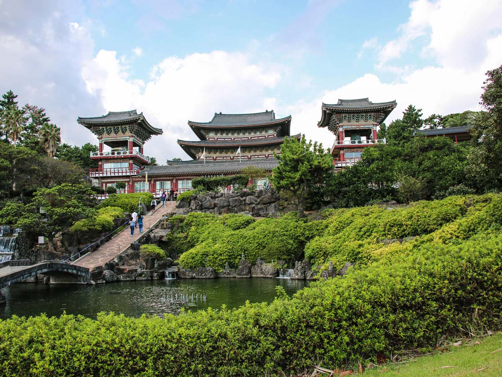
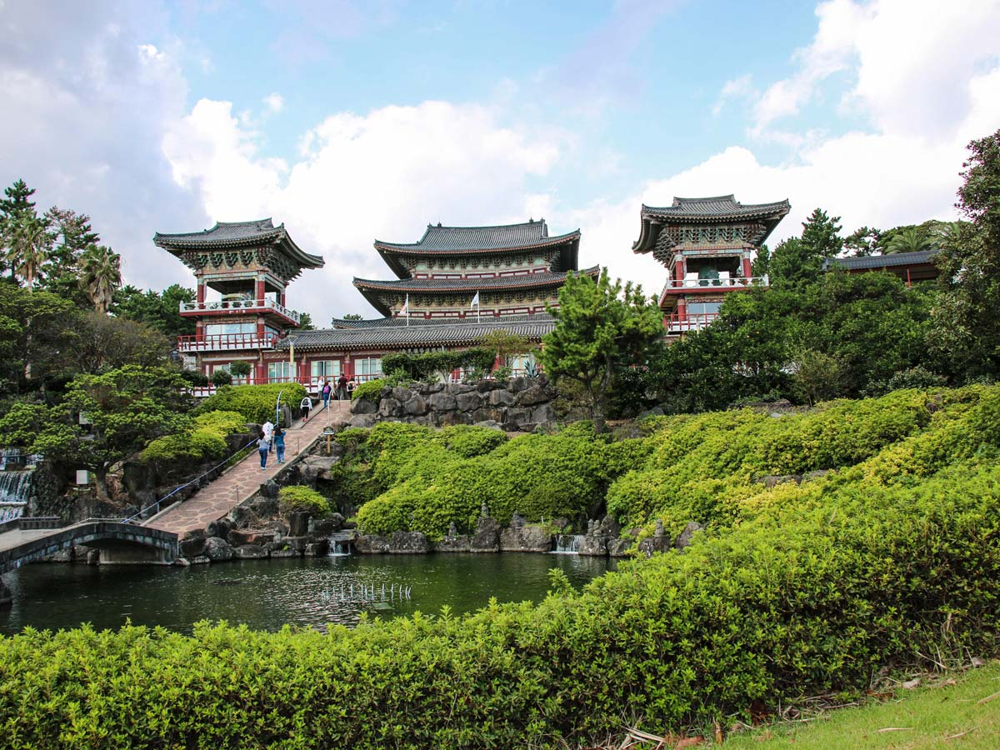

Jeju Island feels like a completely different world compared to the busy
cities of Korea. As soon as you arrive, the pace slows down and
everything feels calmer; the air is fresh, the ocean is bright blue, and
the scenery looks straight out of a postcard. Travelers love starting
their day watching the sunrise at Seongsan Ilchulbong, then exploring
Jeju’s famous waterfalls and lava caves that show the island’s volcanic
history. The beaches are some of the best in Korea, especially Hyeopjae
and Hamdeok, where the water is so clear it almost looks unreal. Driving
around the island is a joy on its own, with quiet coastal roads, green
tea farms, and tangerine orchards everywhere you go. Add in Jeju’s cozy
cafés, delicious seafood, and warm island atmosphere, and it becomes the
perfect place to relax, explore nature, and enjoy a slower, more
peaceful side of Korea.
What many people don't realize is Jeju is not just about beaches. At the
heart of Jeju Island, you’ll find South Korea’s tallest mountain,
Hallasan – a volcano with a crystal clear lake in its crater. The
coastline is sculpted from twisted black volcanic rock and punctuated
with smooth sandy beaches.
Most of the island is mad up of windswept
grassy hills, stone-walled farmland, and tangled rainforest. You can
also explore UNESCO world heritage-listed lava tubes; visit rugged
farming villages, and scramble through spectacular river valleys filled
with rounded, truck-sized boulders.
Amongst the many treasures you might find are:
900-year-old nutmeg tree in Bijarim Forest Bijarim is a rare
fragment of old-growth "gotjawal" stone forest. It is dense, dark, damp,
and ridiculously green. The floor of the forest is a honeycomb of
volcanic rock - piled, twisted, corrugated, and pitted (in places it
looks like frozen waves on the ocean), and every crevice is crammed with
plant or insect life. It’s an amazing place.
 
